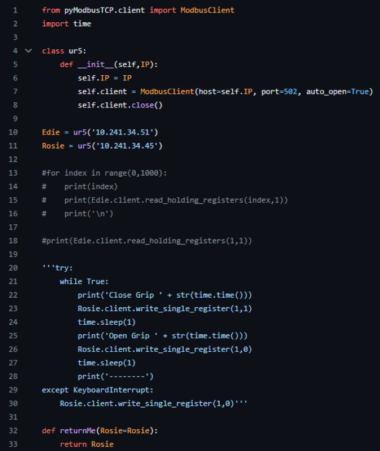
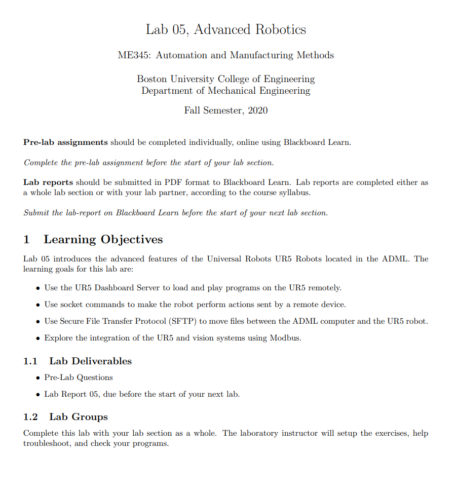
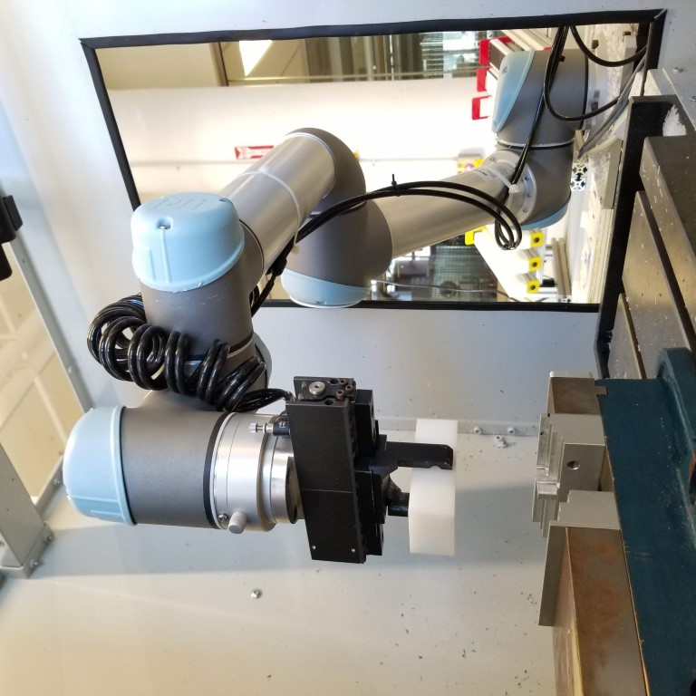

Teaching Principles of Automated Manufacturing
Developing custom industrial automation software to teach university students.
This work was completed during my employement at Boston University as a Laboratroy Supervisor at the Engineering Product Innovation Center (EPIC), located at 750 Commonwealth Avenue in Boston, MA.

In 2019, I returned to my alma mater, Boston University, as a staff member. I felt a bit odd at first - I wasn't sure exactly how I'd feel as a staff member compared to when I was a student. Now, I'd be a technical instructor, especially for the course ME345 Automation and Manufacturing Methods.
As I stepped into the Automated Design and Manufacturing Laboratory (ADML), I was shocked to find how little had changed since I took the course myself back in 2016.

I was expected to know each of these systems intimately and debug them constantly for the 28 students who entered this space each semester.
The system consisted of...
- Three Teledyne-Dalsa vision systems
- Two Haas CNC machines
- A 1994 Rockwell PLC controlling a conveyor
- Three middle-aged Universal Robots UR5s
Still, I never expected that I would completely reimagine the automation software. But when COVID unexpectedly swept the world, I found myself in an awkward position asking, "My job is almost entirely hands-on, in-person. How can I stay active?."

Code from the second-ever Github commit to this repository.
I began working at home, hours on end, with Python, trying to understand all of the API calls for the different machines in the lab. I would go into the lab and test individual scripts and machine behaviors. I quickly got familiar with web sockets, SSH, file servers, CAN, RS485, and dozens of other interfaces I needed to test, debug, and control the system.

The first page from one of the nine laboratory exercises I wrote and conducted in the ADML.
In reality, I had to be the subject-matter-expert for all things automation in the ADML - hardware and software. I wrote the labs! The advanved robotics lab covered each of the ways a Universal Robots UR5 could be manipulated without using the teach pendant including...
- UR Dashboard Server
- Websockets
- Modbus
- Secure File Transfer Protocol (SFTP)

As I was writing small API and test scripts and rewriting all of the laboratroy exercises, I was still conceptualizing a control scheme where multiple “processes” could simultaneously share the limited resources in the lab, seizing and releasing each resource to slowly inch through its unique manufacturing process. Later, I realized that I had unintentionally stumbled onto queue theory.
Within a semester, this project exploded from a single Python script into a full-blown web application. It was dubbed "BUMES," the Boston University Manufacturing Execution Software. There were multiple user interfaces, each showcasing a different aspect of automation, showcasing each of the laboratroy exercises. The software collected execution times and other data for students to process. Eventually, I even hired and managed two brilliant computer engineering students to further improve the software and give it a polish.
See more of the BUMED interface by downloading an example lab manual:
Computer Integrated Manufacturing I
Computer Integrated Manufacturing II
It is incredibly challenging to express the number of lessons learned as part of this work. There were weeklong trials learning everything from how to write loops in G-Code to debugging CAN networks to writing ASCII text commands for the oldest PLC I've ever used. I have a newfound appreciation for the challenges of attaining reliable automation, both in hardware and software.
As is inevtiable when embarking on these journeys, there is much that I would go back and redo. However, as of writing, I am pleased to hear the software is still used today to teach students. See more of my sidequests in the ADML on my Noteworthy Projects page under the "Work" section. Or, continue scrolling here to view some videos.